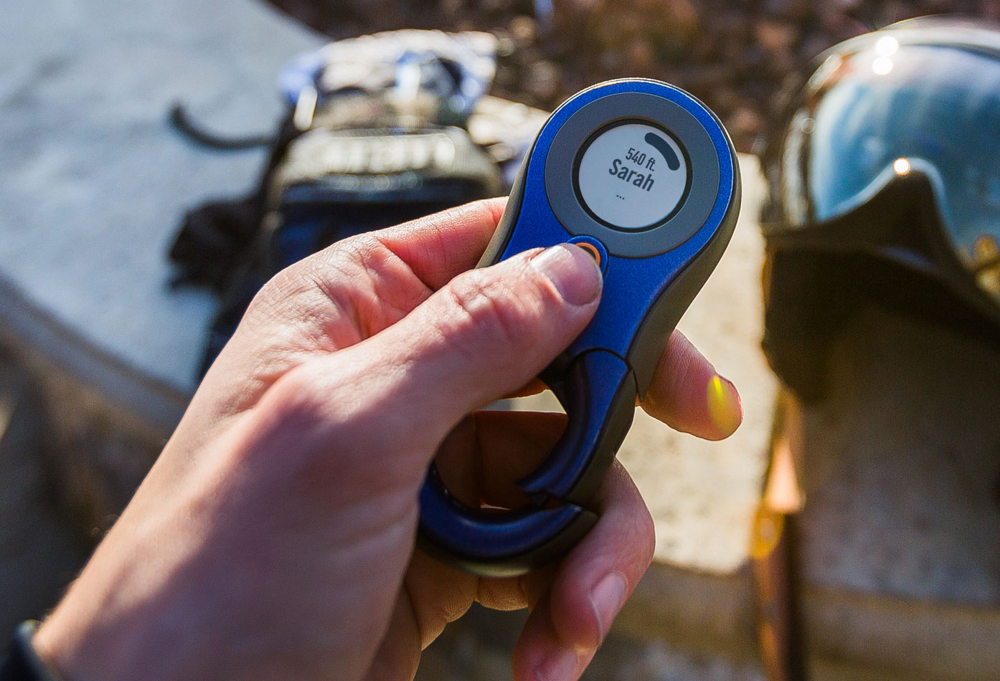
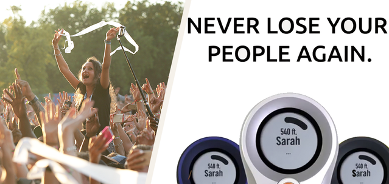

Wearables is technologie wat draagbaar is en die je lichaam als input gebruikt. Bekende voorbeelden van wearables zijn de Apple watch en de Fitbit. Hieronder is mijn zelfbedachte concept te zien. Gericht op sociale interactie.
Concept
Tijdens festivals is er altijd hetzelfde probleem: je vrienden zijn zoek. Jij haalt even snel een drankje en voor je het weet, zijn je vrienden kwijt. Normaal gesproken zou je je vrienden dan even bellen, maar op het festival terrein werkt dat net allemaal iets anders. Vaak is er geen bereik, waardoor je niet zomaar contact kunt leggen met je vrienden. Nu is er de oplossing de festival-tracker. Hiermee kun je precies zien, aan welke kant van jou je vrienden zich bevinden. Ook kun je signalen uit stralen naar je vrienden toe. Zodra je je vrienden kwijt bent, kun je zien aan welke kant je vrienden staan die ook zo’n tracker bij zich hebben. Je loopt dan in de richting en krijgt een nieuwe melding met aan welke kant ze staan. Ook kun je een melding naar de ander sturen. Zijn of haar tracker zal dan vibreren en geluid maken. Zo kunnen jullie naar elkaar toe lopen en hebben jullie elkaar sneller gevonden. De technologie die voor dit idee wordt gebruikt is GPS. Er zijn verschillende technieken waarmee je de locatie van een ander en jezelf kunt meten, maar GPS is het meest geschikt. Dit omdat GPS de afstand tussen grote gebieden kan meten en bijvoorbeeld bij bluetooth moeten de gebruikers niet verder dan 10 meter uit elkaar staan. Ook is GPS vrij nauwkeurig, het kan namelijk de precieze afstand tot dertigcentimeter berekenen. De sensoren die worden gebruikt zijn de distance sensor en de location sensor. Hiermee kun je de locatie van de ander opvragen. Ook wordt er gebruik gemaakt van een buzzer en een speaker. Zodat de melding duidelijk overkomt bij de ander. De reacties die de festival-tracker de gebruiker biedt zijn de volgende. De gebruiker kan de locatie van zijn vrienden nauwkeurig zien en krijgt een melding zodra zijn/haar vriend de andere kwijt is en kan dus ook een melding sturen. Kortom de festival-tracker is een oplossing voor vele festival-gangers.
 Reflectie
Ik vind wearables erg handig. Zelf beschik ik er nog over geen een, maar dit zou ik wel graag willen doen. Ik vind het namelijk erg fijn om zo min mogelijk handelingen uit te hoeven voeren om gebruik te kunnen maken van de techniek. Zo lijkt het mij erg fijn om een Apple watch of een Fitbit te hebben. Aan de andere kant denk ik wel dat het hebben van een Apple watch ervoor zou zorgen, dat ik nog verslaafder zou zijn en nog meer op mijn socialmedia zou kijken. Je hebt namelijk niet echt de mogelijkheid om het weg te leggen. Je hebt het tenslotte bijna altijd om. Een vriendinnetje van mij heeft een wearable bij haar merk je ook echt dat ze altijd online is. Wel vind ik het fijn dat door de komst van wearables de techniek minder op de voorgrond zou treden en je eerder sociaal kunt zijn met mensen.